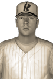

|  | Richardson Not Coming Back
Friday, April 1st, 1932
The expression on his face said it all when starting pitcher Mal Richardson was talking to reporters at a special press conference today. He was carefully examined by specialists the past couple of days, and after several tests the diagnosis was a torn labrum. In this case, it means his career is likely over. The Davenport Rivermen issued the following statement: "It is with great sadness that we see Mal ending his career due to injury. He was a great competitor and teammate and will be missed by the Rivermen organization." Richardson is 16 years old. |   |
|